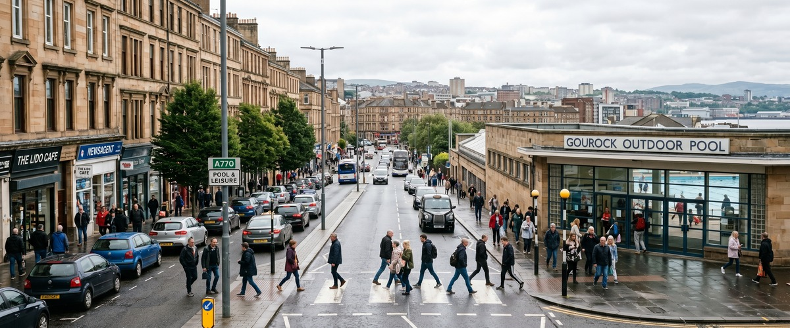
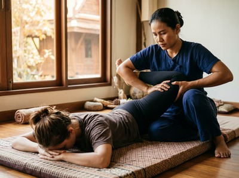
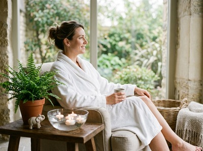

Thai massage near Gourock Outdoor Pool puts authentic therapeutic care within easy reach of one of Inverclyde's most distinctive landmarks.

The outdoor pool sits right on the Firth of Clyde waterfront, drawing swimmers, families, and active locals throughout the summer season. It is a place people come to move their bodies, breathe fresh sea air, and take time out from their routines. Thai Massage Greenock fits naturally into that same mindset.
After a swim in the saltwater lido, or on a rest day between active sessions, a professional massage treatment is one of the best things you can do for tired or tight muscles. Thai Massage Greenock is based on South Street in Greenock town centre, less than two miles along the coast from the outdoor pool. That is a short bus ride or a straightforward drive, and it makes us genuinely convenient for anyone spending time in the Gourock waterfront area.

Gourock itself is a coastal town with a strong community of active and health-conscious residents. People here walk the Esplanade, swim in the lido, cycle, and commute into Glasgow for work. Many carry the physical toll of desk-based jobs or physically demanding lifestyles, and regular massage is one of the most effective ways to manage that. You can book your session online and have an appointment confirmed before you even leave the poolside.
Jariya offers a full range of traditional Thai treatments, each one adapted to what your body needs on the day. Whether you are recovering from an active weekend at the lido or carrying tension from a long week at work, there is a treatment suited to you.
The outdoor pool is located on the Gourock waterfront, just off the Esplanade. From there, Thai Massage Greenock at 0/2 16 South Street, Greenock is a short journey along the coast road. By car, the drive takes around ten minutes via the A770 through Greenock. Parking is available near South Street in the town centre.
By bus, McGill's services run regularly between Gourock and Greenock town centre, with the journey taking around fifteen to twenty minutes. Gourock railway station is also within easy walking distance of the pool, and ScotRail trains run frequently between Gourock and Greenock Central, making the trip quick and straightforward if you prefer not to drive.
Once you are in Greenock town centre, South Street is easy to find on foot. Book in advance online so your session is waiting for you when you arrive.
Jariya Malone is a certified massage therapist trained at Wat Po in Bangkok, the traditional home of Thai massage. Her qualifications are not from a weekend course. They come from one of the most respected institutions in the world for this discipline.

Every client at Thai Massage Greenock receives a personalised session. Jariya keeps detailed notes from each visit and builds on previous treatments, so care evolves with you over time. That personal, therapist-led approach is what sets Thai Massage Greenock apart from chain spas and drop-in wellness centres.
Gourock Outdoor Pool is a saltwater heated lido sitting right at the edge of the Firth of Clyde, with views across the estuary that are genuinely hard to beat. As noted on Gourock Outdoor Pool on Wikipedia, it is the oldest heated swimming pool in Scotland, having opened in 1909. It is the kind of local landmark that gives Gourock its distinct character as a place where people value outdoor life and physical wellbeing.
Thai Massage Greenock is located on South Street in Greenock town centre, roughly two miles from the Gourock waterfront. By car that is around ten minutes along the A770 coast road. By bus it takes around fifteen to twenty minutes on the regular McGill's service between Gourock and Greenock.
Bus and car are both straightforward options. McGill's buses run regularly along the coast between Gourock and Greenock town centre, stopping close to the South Street area. If you prefer the train, Gourock station is a short walk from the pool, and ScotRail services run frequently to Greenock Central, putting South Street within easy walking distance of the station.
Thai Sports Massage is designed specifically for active recovery, targeting the muscle groups most affected by physical exertion and helping to reduce soreness and improve flexibility. Traditional Thai Massage is also an excellent choice after swimming, using assisted stretching and acupressure to release tightness across the shoulders, back, and legs. Jariya will advise on the best option when you book.
Same-day appointments are sometimes available depending on the schedule. The best approach is to check availability and book online via the booking form, or call Thai Massage Greenock on 01475 600868 to speak directly about what is available. Booking in advance is always recommended to secure your preferred time.
Regular swimmers and active people are among those who benefit most from Thai massage. The combination of assisted stretching, acupressure, and targeted pressure work addresses the repetitive strain patterns that build up with regular physical activity. Many clients find that regular sessions improve their range of motion and help them recover faster between swims or workouts.